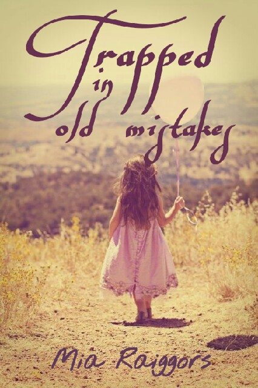
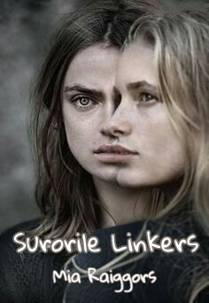
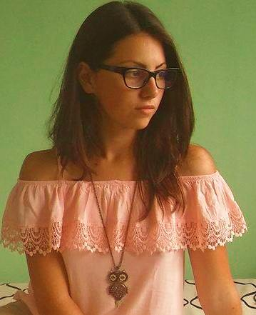

Mia Raiggors
Portofoliu |
||
|---|---|---|
|  |  | |
| Trapped in old mistakes | Two idiots and a jump | Surorile Linkers |
Despre Mia |
|
|---|---|
|  | Poate încerci să afli câte ceva despre mine,
poate eşti curios în privinţa a cărui tip de muzică mă atrage cel mai mult,
a culorii mele preferate sau a câtor pisici am, dar o secundă de sinceritate este de ajuns
încât să realizezi că nu te interesează, de fapt, toate aceste lucruri. Totuşi,
dacă ai ajuns până aici pe pagina mea web, mă voi îmbăta cu gândul că
ceva te-a atras de la început, fie scrierea mea, fie persoana din spatele tastelor, deci mă consider
datoare să trădez câte ceva despre mine. Trăiesc în vestul României, în Timişoara, unde urmează să studiez cursurile Universităţii Politehnica Timişoara. Vârsta mea defineşte puştoaica ce trăieşte în mine, 18 ani. Iubesc muzica în care predomină viorile sau pianul, turcoazul ca cel de peruzea şi nu am absolut nici o pisică. Sunt o adoratoare a labradorilor şi golden retriever-ilor. Am ajuns să scriu probabil pentru că este o altă formă de artă, iar eu mă complac în convieţuirea cu frumosul, fie că stilul meu scriitoricesc este sau nu strălucit. Ironia face că pasiunile mele sunt muzica, desenul sau cărţile şi totuşi, profesional, sunt înconjurată de ştiinţă. Dar şi Ion Barbu a fost poet-matematician, nu? |
Evenimente viitoare |
|||
|---|---|---|---|
| Mai 10 | Mângâierile unui calculator | Mai 11 | Serata unei alte generaţii |
| Iunie 6 | Conferinţă pe tema originilor limbii române | Iunie 26 | Crearea unei capodopere în direct |